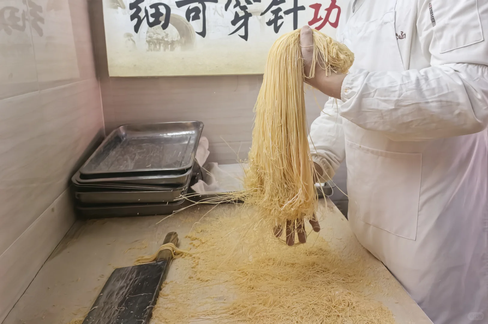
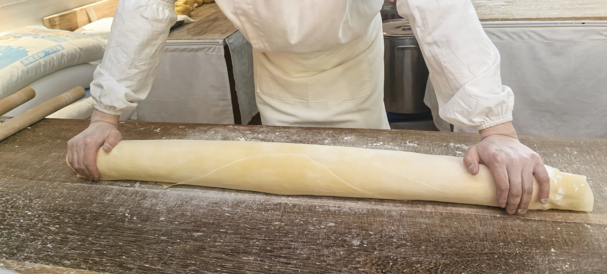
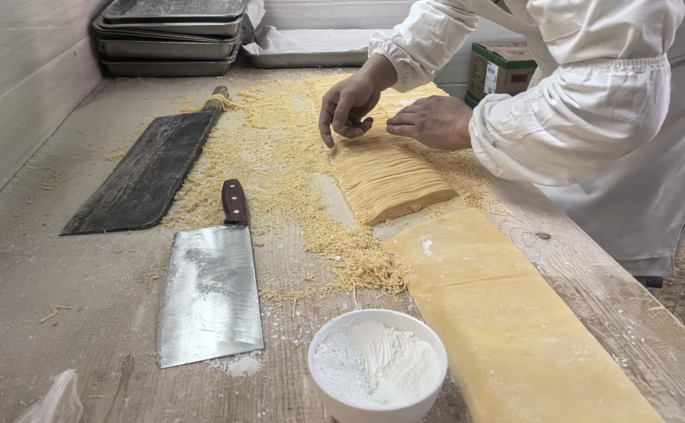
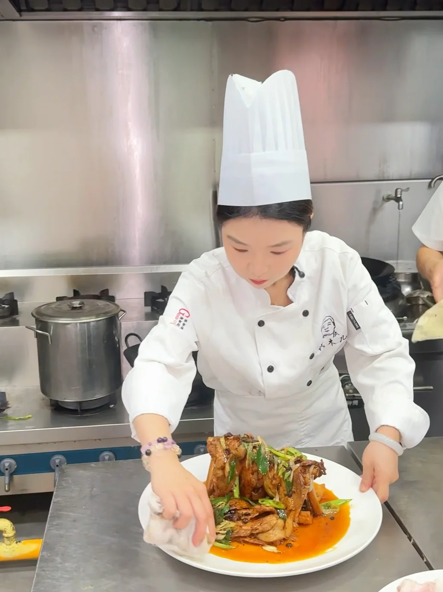

先问辣度与份量
按同行者口味点菜。带孩子或不习惯辣味时，提前向门店说明。

一碗细面，一盘锅气。用地方手艺，记住广汉的味道。
金丝面把功夫藏在细处，连山回锅肉把风味留在锅气里。看手艺与尝味道，可以是广汉旅行里同样重要的一章。

借助身体与杠杆反复压制，让面团逐渐成片。

看手腕与刀身的节奏，细面从一刀一刀中成形。
面丝提起时，细度与均匀度才清晰可见。
连山回锅肉以大肉片与鲜明锅气为地方特色。煸炒、调味与配菜共同完成一道热烈的川味，适合正餐时慢慢分享。
专程去连山镇，可以把用餐与乡野半日放在一起；只有一天，则在市区按当日营业选择当地川菜。
查找连山镇餐饮

按同行者口味点菜。带孩子或不习惯辣味时，提前向门店说明。
制作过程不是固定场次的演出。观看或拍摄前先问，遇不到也可以好好吃一碗面。
连山镇体验需要单独转场。不要把图片里的菜和某家餐厅的营业承诺画等号。
广汉市区（金丝面）或连山镇（回锅肉专题）
若专程到连山镇用餐，按实时导航安排城区往返；一日经典线可在市区选择当地川菜。
搜索连山回锅肉地方背景依据公开资料整理；路线与观察建议由本站编辑。图片作为场景参考，不代表门店当天营业或固定表演。
巴蜀美食：广汉金丝面广汉市政府：地方手艺与味道背景资料整理：2026-10-10 · 动态消费信息出发前确认